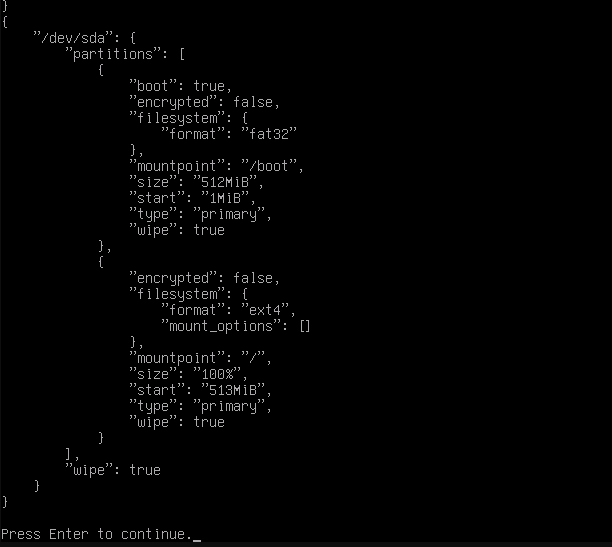
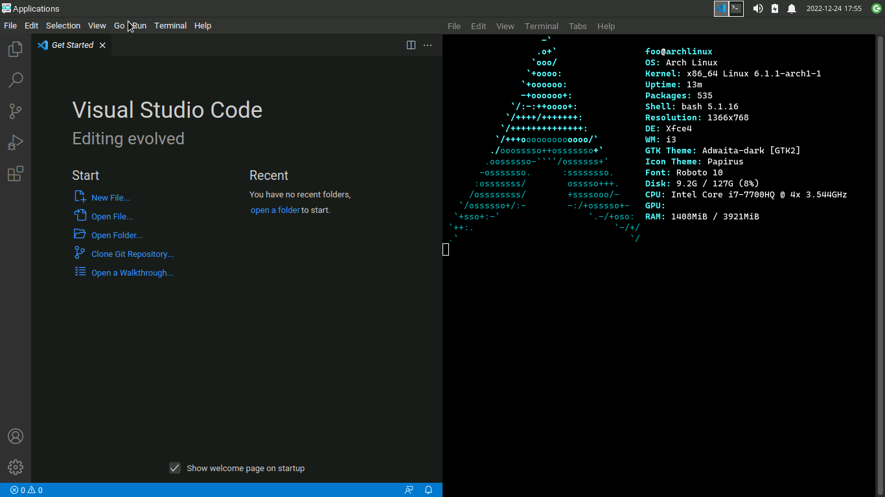
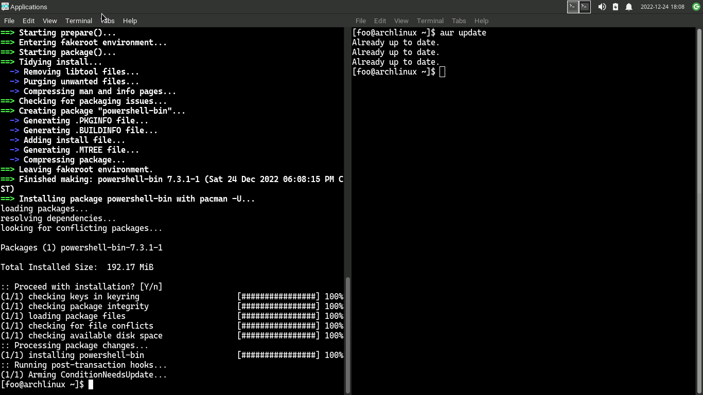
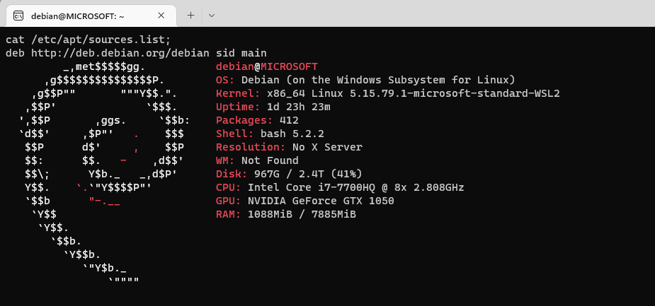

BTW, I use Arch ?
使用準備
一開始在Windows的WSL上用過Debian體驗算不錯，想裝Debian進平板卻過UEFI後就卡在安裝。隨後試了Alpine、OpenSUSE、Fedora、Mint、Ubuntu、Kali...，幾乎(當然包括Arch Linux)全部裝失敗。
唯一進安裝後能開機就只有Manjaro，它提供比Arch Linux更簡單好用的安裝和配置環境。雖然因為最後因為內建軟體讓我跟這個發行版分道揚鑣，但是pacman -Syu已經成為我開啟bash後第一個習慣動作。
畢竟沒在打工預算不多，在問過很多私下交易還不下架的蝦皮賣家後，終於在露天拍賣找到了一台才1500的二手筆電。一台賽揚N3150的筆電，原價9000左右，這比入門還入門的定位，驚了
Arch Linux安裝
 用過Manjaro稍微了解Arch後，在Hyper-V虛擬器中也安裝過Arch。於是，這次筆電安裝時我懷著雄心壯志想要不靠腳本安裝。開啟電腦，載入安裝媒體，開啟說明，準備安裝。OK!!! 太好了，從入門到放棄僅僅花了我一小時。
不得不說我真的運氣不錯，archinstall這個腳本差不多四月才完善，離我安裝時的七月才不過短短三個月。雖然用腳本安裝感覺有點遜(考慮到Debian連安裝都用滑鼠點點點，腳本就勉強給過)。至少一台活生生的Arch Linux安裝好了
使用體驗
桌面配置
Linux使用者雖少，社群卻挺活躍的，基本配置要找的相關資料跟安裝包都很好找。我自己很偏好Xfce和i3的配置，因為平常用Windows時我就很討厭用滑鼠調視窗位置
i3的快速鍵基本上都挺好用的(甚至有時在Windows上我都會不小心去按i3的快捷鍵)，而且在筆電上相當省電，實際用下來粗估可以比視窗環境的Windows或Xfce節省1/3的電力
安裝於虛擬器中的Arch Linux (Xfce + i3): 更新AUR軟體
儘管每次進系統的第一件事就是: pacman -Syu，不過畢竟自己透過AUR安裝的軟體需要手動更新。
就算有email通知，每次更新都自己git clone然後安裝也有點麻煩。
很多使用者喜歡用yay或paru之類的AUR helper，甚至是用於Manjaro的pamac。但因為我剛好想學一點腳本，就寫了一個名為aur的安裝腳本
aur update後如果有更新就用aur upgrade指令安裝由腳本跑
git clone、makepkg -s、pacman -U等指令

學習用途
開啟終端機，pacman -S base-devel gdb、pacman -S dotnet-sdk、pacman -S rust，基本上要學什麼程式語言只要知道套件名稱就能安裝。
一開始在Windows上學習如C++或Java時，曾經因為版本和環境參數問題浪費很多配置時間，Linux環境參數和套件安裝則根本解決了這個問題。甚至我偵錯程式時還更傾向自己寫腳本，不同專案資料夾在腳本直接編寫cd $1對我而言比選檔案按偵錯直觀。
Linux能這麼受到部分開發者喜愛，套件庫開箱即用的體驗絕對功不可沒。
在學校使用Linux，回到家裡的Windows電腦基本都投入WSL的懷抱。習慣了Arch Linux滾動發行的模式後，我甚至都傾向用Debian sid (unstable)。
儘管承擔一定風險，但由於Debian 11的GCC 10老到連教科書範例都跑不了，因此決定讓Debian也處在"滾動發行"的環境下 (很多使用者也表示Debian sid只安裝被經常維護的軟體，使用上基本就不會有問題)
BTW, I use Arch

這應該是Arch社群流傳最廣泛的笑話。Arch Linux本來就很難安裝(用腳本的我沒資格說這話)，客觀來看也相當優秀。使用者想到處炫耀確實情有可原
"I only use Arch Linux"
"Do you know I use Arch?"
"Yeah, I'm a Linux user, why do you know? (Arch Linux logo as wallpaper)"
"In case you didn't know, Arch is..."
在拿同學同學做實驗，親自嘗試以上每一種後，如網路評論和基本預期，最終會得到一個結論:
NO BOBY F***KING CARES THAT YOU USE ARCH LINUX
心得
總體來說，我對這段從暑假到期末的Arch Linux體驗覺得很滿意。當然真正的配置上我完全不理解，碰到很多像是驅動之類的扯事(我的Firefox到現在還是開不了垂直同步)。這部分我可能一段時間都無法解決。
如果是學習程式，現在的我偏好直接用Linux，其次是WSL，原生Windows多半被我當成最後測試和存檔環節。當然為了方便性，除了Bash我應該也會去學一點PowerShell。
有機會想嘗試在家裡電腦配置Linux試試看，順便試試看遊戲部分。很快就要放寒假了，再加上以後如果外出實習勢必要再買台筆電，家裡電腦被我下毒手也只是時間問題。